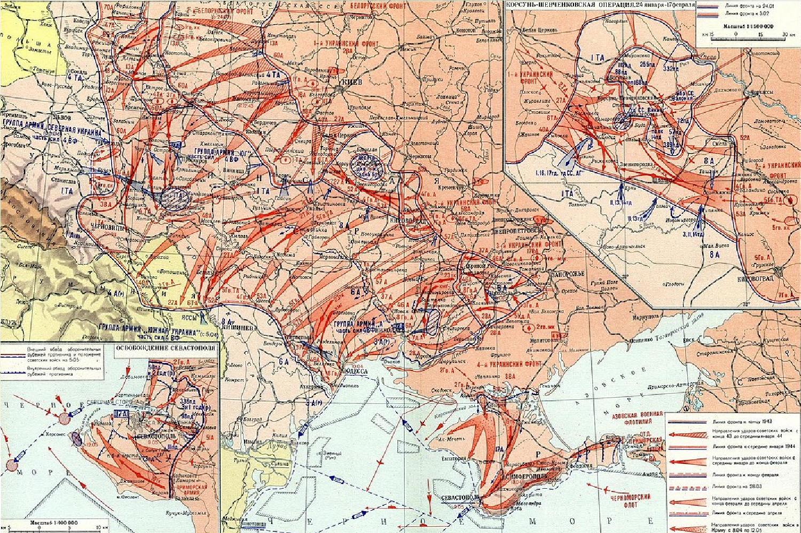
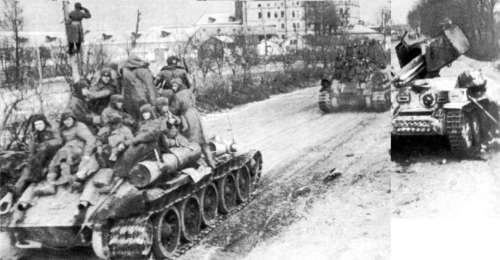
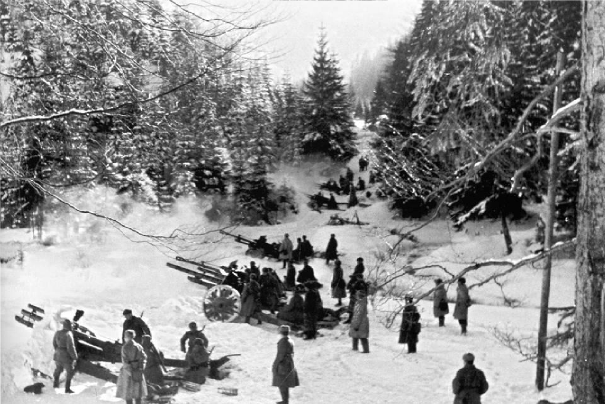

1943
|  |
|
|
Советы смогли сосредоточить значительные силы и средства, включая танковые и механизированные корпуса. Основные силы противника составляли немецкие войска, которые пытались удержать свои позиции в сложных условиях зимы.18 декабря 1943 года советские войска начали массированную артиллерийскую подготовку, после чего последовало Ключевыми событиями операции стали освобождение Левобережного Киева и завоевание таких крупных городов, как Умань и Житомир. В результате операции советские войска смогли выйти к Карпатам и создать условия для дальнейших операций по освобождению Западной Украины и подготовке к наступлению на позициях противника в Центральной Европе. |
 |
|  |
Днепровско-Карпатская операция была значимой в стратегическом плане: она не только подорвала оборону немецких войск, но и улучшила боевую обстановку на всем советско-германском фронте. Операция также способствовала моральному поднятию советских войск и населения в освобожденных областях Украины. |